이해가 병목이에요
에이전트에게 물어보면 장황하게 설명해 줘요. 쉽게 해 달라고 하면 이번엔 디테일이 다 빠져요. 발표자는 이 문제를 안드레 카파시가 자주 인용하는 한 문장으로 요약해요.
생각은 외주를 맡겨도 이해는 외주를 맡길 수 없다.
— 영상 00:34
에이전트가 일을 아무리 빨리 해도, 결과를 사람이 이해하는 속도가 따라가지 못하면 거기서 막혀요. 이 영상은 그 이해를 빠르게 하는 방법을 세 갈래로 풀어요.
- 말투 — ELI5나 ASD-STE100으로 필요한 정보만 간결하게 받아요.
- 그리기 — 그림으로 그려서 직관적으로 빨리 이해해요.
- 포맷 — 같은 뼈대(스캐폴딩)를 정해 두면 생각과 이해가 일관돼요.
영상 전체를 한 장으로 보면 아래 그림과 같아요. 위 줄은 데모에서 차례로 해 본 요청이고, 아래 띠는 그 모든 답의 모양을 일정하게 잡아 주는 포맷이에요.
예시 자료: pstack
데모에 쓰는 자료는 pstack이에요. Lauren Tan(poteto)이 만든 스킬 묶음으로, GitHub의 cursor/plugins 저장소 안에 있어요. 처음 보는 저장소를 공부하는 상황이라고 가정하고, 에이전트에게 저장소 주소를 주며 "이것에 대해서 설명해 줘"라고 시작해요.
화면 가운데가 Claude Code이고, 첫 줄에 pstack 주소와 함께 보낸 요청이 보여요. 바로 아래 Skill(into)가 불려 온 것도 보여요. 오른쪽 패널에는 OnlineLecture, autokliq, video_editor 같은 세션이 "내 답을 기다려요" 또는 "일하는 중"으로 나뉘어 떠 있어요.
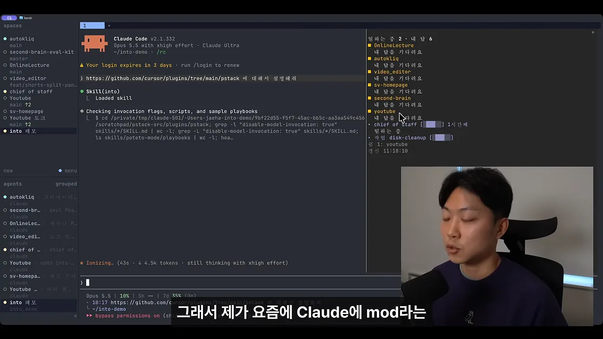
발표자는 Herdr라는 터미널 멀티플렉서 안에서 여러 Claude Code 세션을 돌려요. Herdr도 세션 상태를 보여 주지만 약해서, Claude Code에 새로 생긴 mod 기능으로 터미널 UI(User Interface) 패널을 직접 만들었대요. 이 패널은 토큰을 하나도 쓰지 않아요. 평소에는 Chief of Staff라는 세션 하나에서 나머지 세션을 모두 관리하는데, 이 이야기는 다음 영상에서 다룬다고 해요.
말투를 바꿔요: ELI5와 ASD-STE100
그냥 설명해 달라고 하면 답이 길고, 증명 같은 부분은 개발자가 아니면 어렵게 다가와요. 그래서 발표자는 말투를 지정해요.
ELI5: 비유로 큰 그림 잡기
ELI5는 "다섯 살에게 하듯 설명해 줘"라는 요청이에요. 기술 용어가 빠지고 누구나 알아들을 말로 바뀌어요. 화면 위쪽 한 줄 요약은 pstack을 "손은 빠른데 덜렁대는 AI 요리사에게 쥐여 주는 주방 규칙과 레시피 묶음"이라고 불러요. 아래 표는 주방의 각 역할을 pstack의 부품에 하나씩 대응시켜요.
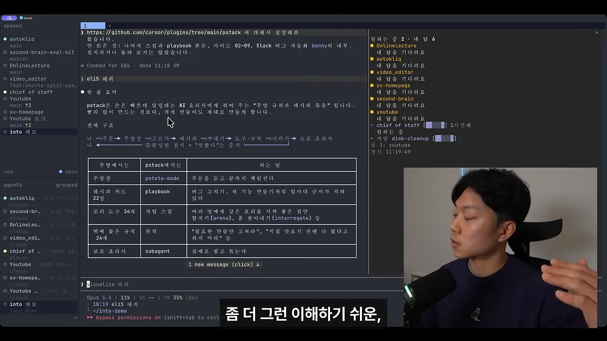
ELI5는 어려운 개념을 처음 잡을 때 좋아요. 다만 너무 추상적이라, 그다음 단계로 나아갈 때는 오히려 걸림돌이 된대요.
ASD-STE100: 간결하지만 기술적으로
ASD-STE100은 항공에서 쓰는 단순화된 기술 영어 규칙이에요. 위급한 상황에서도 모든 정보를 짧고 빠짐없이 전하려고 생긴 체계라고 발표자는 설명해요. 안드레 카파시가 요즘 이것만 쓴다고 말한 걸 보고, 자기도 일할 때 기본으로 넣어 두고 써요.
같은 질문을 ASD-STE100으로 다시 했더니 답의 모양이 달라졌어요. 맨 위에 posthog:writing-simplified-technical-english 스킬이 불려 온 게 보이고, 한 줄 요약, 용어 정의, 전체 구조 화살표, 부분별 개수와 기능 표가 순서대로 나와요.
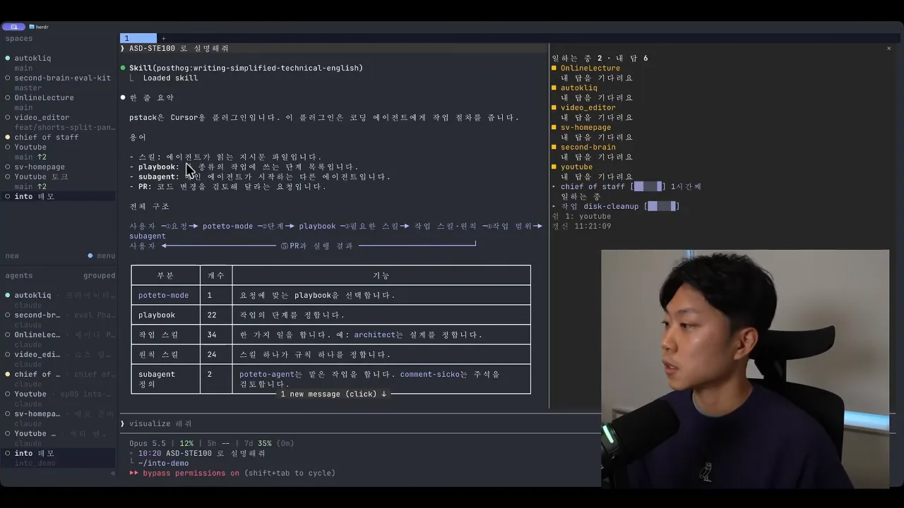
세 답을 나란히 놓으면 차이가 분명해요.
| 요청 | 답의 모습 | 언제 좋은가요 |
|---|---|---|
| 그냥 설명해 줘 | 길고, 비개발자에게는 어려워요 | — |
| ELI5 | 비유 중심, 기술 용어가 빠져요 | 처음 큰 그림을 잡을 때 |
| ASD-STE100 | 용어 정의, 구조, 개수 표까지 간결하게 | 그다음 단계로 나아갈 때 |
발표자가 하나 더 짚는 건 ELI5와 ASD-STE100 두 답의 모양이 똑같다는 점이에요. 한 줄 요약, 전체 구조, 표가 같은 순서로 나와요. 이게 이해에 아주 중요하다고 보고, 왜 그런지는 뒤의 포맷 이야기에서 풀어요.
그려서 봐요: HTML 한 장과 interactive HTML
글만 봐서는 이해에 한계가 있어요. 그래프, 다이어그램, 표, 인포그래픽이 들어가면 훨씬 빨리 들어와요. 발표자는 커리어해커 알렉스가 만든 visualize 스킬을 자기 입맛에 맞게 고쳐서 써요.
HTML 한 장
먼저 "visualize 해 줘, HTML 페이지 하나로"라고 했어요. 결과 페이지의 가운데에는 "요청은 다섯 곳을 지나 증거와 함께 돌아옵니다"라는 흐름도가 있어요. 왼쪽 '나'에서 출발해 ① 요청, ② 작업 종류, ③ 필요한 스킬, ④ 맡길 범위를 거쳐 subagent까지 가고, 아래 ⑤ 화살표로 PR(Pull Request)과 실행 증거를 들고 돌아와요.
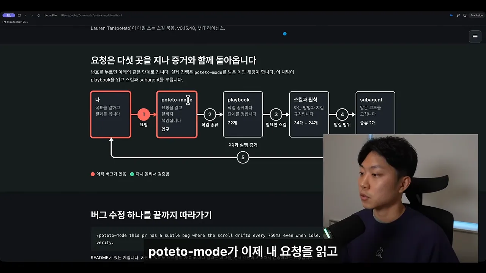
흐름도 아래에는 README의 버그 수정 예시(스크롤이 750ms마다 밀리는 버그)를 요청, 절차, 원인, 맡기기, 증명과 PR 단계로 끝까지 따라가는 칸이 있어요. 마지막 "기억할 것 세 가지"는 설치만 해서는 거의 바뀌지 않고 poteto-mode를 직접 불러야 한다는 것, 되돌릴 수 있는 일은 묻지 않고 한다는 것 같은 내용이에요.
interactive HTML
이어서 "interactive HTML로 디테일하게 보여 줘"라고 했어요. 맨 위 '어디서 쓰나요?'에서 Cursor와 Claude Code를 고를 수 있고, 위쪽 메뉴에는 전체 구조, 따라가기, 기억할 것, 코드 지도, 상황별 동작, 불변 규칙이 있어요.
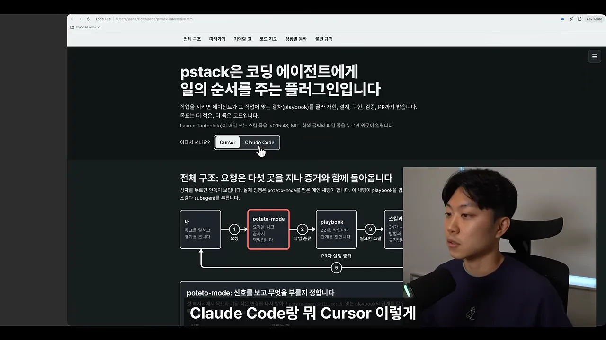
흐름도의 상자를 누르면 그 부분이 무엇을 하는지 한 문장씩 알려 줘요. 예를 들어 '나'를 누르면 내가 하는 일 다섯 가지가 나오고, 근거가 된 원문 파일과 줄 번호까지 달려 있어요. "요청 하나 따라가기"에서는 왼쪽 목록에서 Investigation, Bug fix, Feature 같은 playbook을 고르고, 다음 버튼이나 자동 재생으로 단계를 한 칸씩 넘겨요.
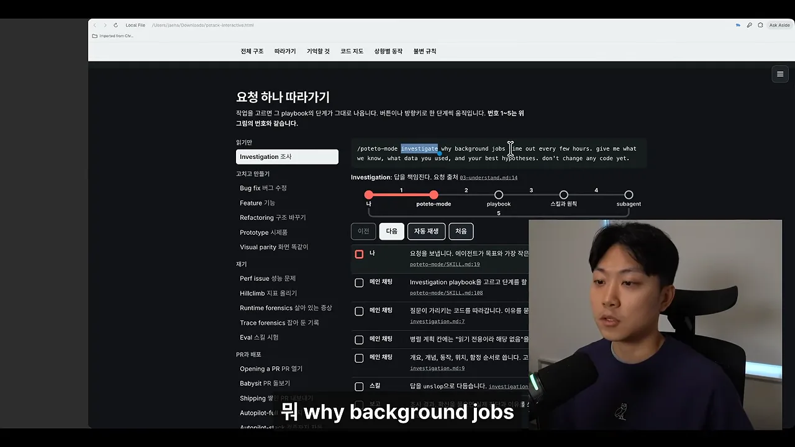
스킬 목록을 검색하는 칸도 있어요. 발표자는 클릭할 때마다 무엇이 무엇인지 알려 주니 훨씬 더 디테일하게, 더 쉽게 볼 수 있다고 평가해요.
퀴즈와 쇼츠로 굳혀요
HTML까지 봤다면 한 단계 더 나가서 퀴즈를 만들 수 있어요. 우리가 시험을 보는 이유도 결국 더 잘 이해하기 위해서니까, 시험 문제를 만들어 달라고 하는 거예요. 발표자는 일할 때 가끔 이렇게 살짝 게이미피케이션을 해요.
화면은 "pstack, 꼭 알아야 할 것 16가지"라는 퀴즈예요. 위쪽 동그라미 16개가 문항 진행을 보여 주고, 첫 문제는 "pstack을 한 문장으로 말하면?"이라는 객관식이에요. 뒤에는 부품과 하는 일을 잇는 문제도 있어요.
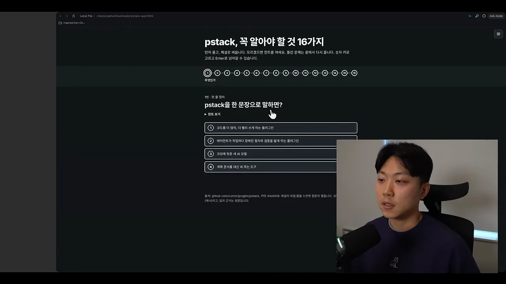
쇼츠도 만들어 달라고 했어요. 인스타 스토리처럼 넘기는 세로 화면이에요. "요청은 이렇게 흘러요" 화면은 나, poteto-mode, playbook으로 이어지는 빨간 점이 한 칸씩 채워져요.
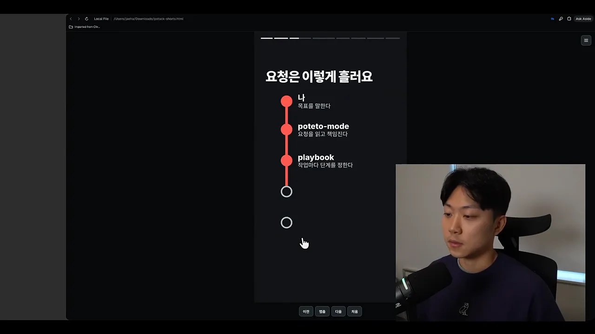
이어서 숫자 카드가 나와요. playbook 22개(작업별 절차), 작업 스킬 34개(하는 방법), 원칙 24개(지킬 규칙)예요. 앞의 ELI5와 ASD-STE100 답에서 본 숫자와 같아요. 마지막 장은 Claude Code 설치 명령이에요.
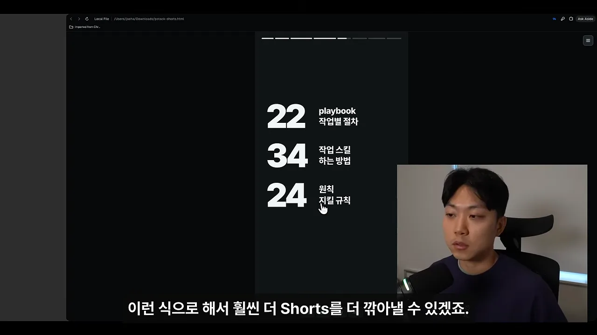
지금은 간단한 모션 그래픽이지만, Blender를 쓰거나 내레이션, 자기 목소리를 넣으면 더 다듬을 수 있어요. 짧은 영상은 글을 읽는 것보다 훨씬 빨리 들어오고, 같은 방식으로 롱폼도 만들 수 있다고 해요.
포맷을 정해 두면 이해가 빨라요
지금까지의 답이 늘 같은 모양으로 나온 건 우연이 아니에요. 발표자가 포맷을 템플릿으로 만들어 뒀기 때문이에요. 그 포맷을 담은 스킬이 into예요. into의 소개 화면이 역할을 셋으로 나눠요.
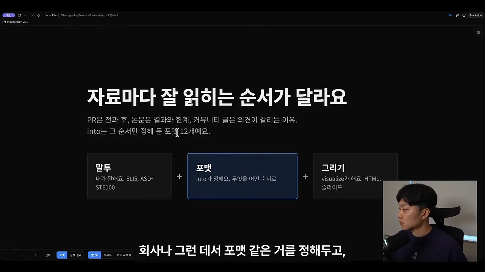
말투는 내가 요청에 붙이고, 그림은 visualize가 그려요. into는 가운데 칸, 즉 무엇을 어떤 순서로 보여 줄지만 정해요. 제목 아래 설명대로 into는 그 순서만 정해 둔 포맷 12개예요.
왜 포맷을 고정하나요
에이전트는 비결정적이라 매번 다른 모양으로 답해요. 설계 문서 다섯 개를 던져 주면 다섯 개가 다 다른 포맷으로 설명돼요. 발표자는 이게 불편했어요. 자기가 설계 문서를 이해하기 쉬운 순서가 있으니 그걸 고정해 둔 거예요. 사람마다 편한 포맷은 다르다는 점도 덧붙여요.
설계 문서 포맷과 세 단계
설계 문서 포맷의 왼쪽 그림은 문제에서 고른 안 하나와 버린 안 둘로 갈라지는 구조예요. 아래 비교 문구가 핵심이에요. 보통은 버린 안이 문서 뒤쪽에 있어서 왜 이 안인지 늦게 알게 되는데, into는 고른 안 옆에 버린 안과 이유를 나란히 놓아요. 오른쪽 칸은 기본(간단히)일 때 한 줄 요약, 문제, 전체 구조, 고른 안과 버린 안, 트레이드오프 다섯 개예요.
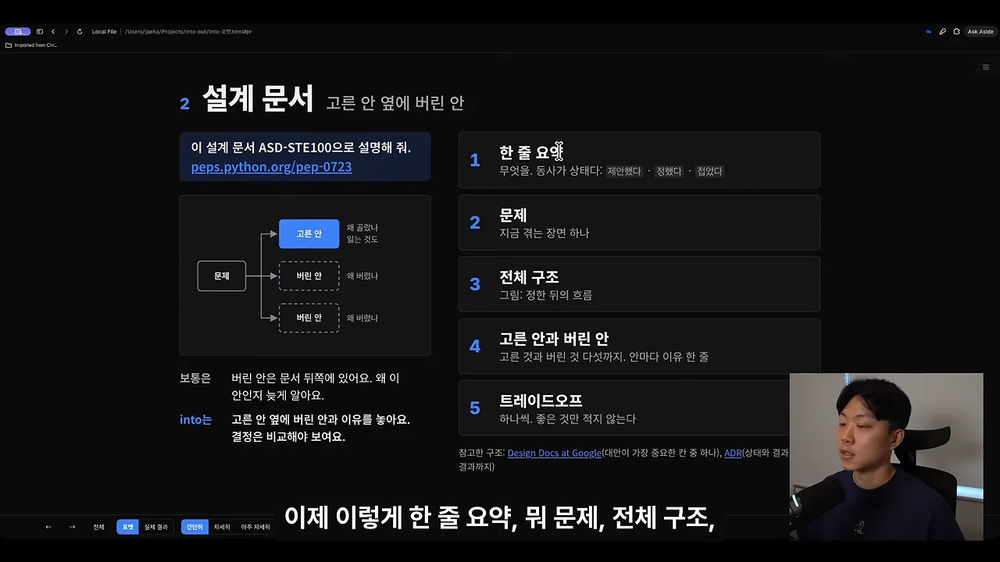
아래 메뉴에서 자세히를 누르면 목표와 비목표, 대안 비교, 상황별 동작, 열린 질문 네 칸이 더해져 아홉 칸이 돼요. 왼쪽 위 요청 칸에는 "이 설계 문서 ASD-STE100으로 설명해 줘"와 함께 Python PEP(Python Enhancement Proposal) 문서 주소가 들어 있어요.
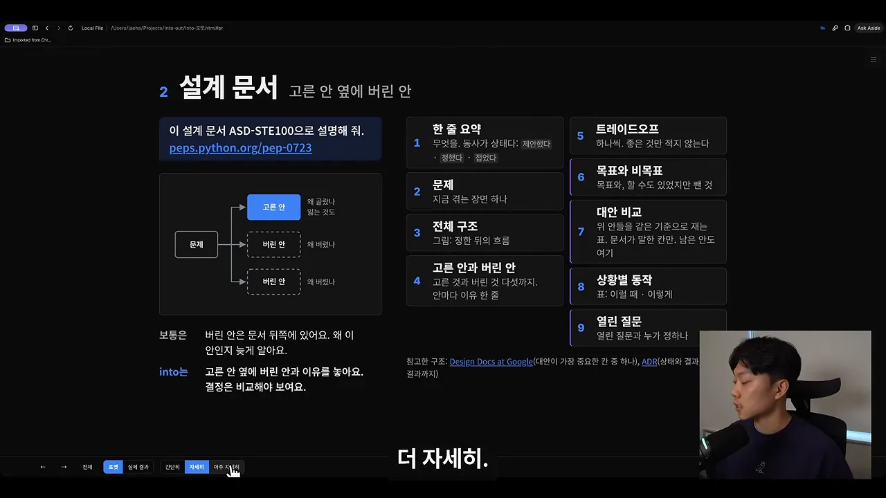
아주 자세히로 가면 상세 설계, 공통 관심사, 배포와 롤백까지 더해져요. 같은 포맷을 쉬운 판, 중간 판, 심화 판 세 수준으로 가져가는 거예요.
저장소 포맷과 다른 자료들
저장소 포맷은 "요청 하나가 지나가는 길"을 따라가요. 예시 요청은 "codex github를 visualize해 줘"예요. 보통은 폴더 이름을 나열하는데, 그러면 이름만 보고는 무슨 일을 하는지 몰라요. into는 요청 하나가 들어와서 나갈 때까지 따라가고, 그림의 번호와 단계 번호를 맞춰요. 오른쪽 칸은 한 줄 요약부터 안 읽은 곳까지 11개예요.
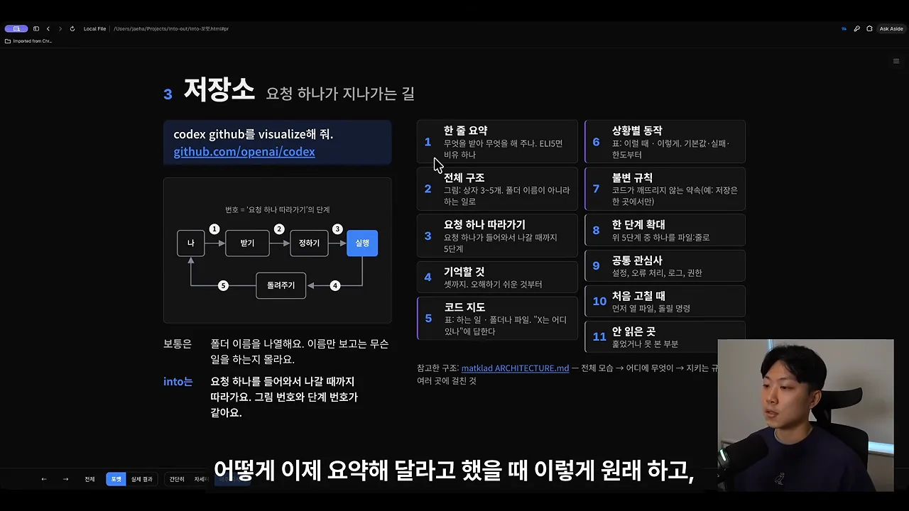
이 밖에 에이전트 스킬, 에이전트가 준 긴 답, 개념, 논문, 영상, X·스레드 글, 커뮤니티 글에도 포맷이 있어요. 발표자는 요즘 X나 스레드 글을 많이 주고 인사이트를 뽑는대요. 다 읽고 다 볼 시간이 없으니까요. 늘 정해 둔 포맷으로 나오니 이해가 빠르고, 다음에 무엇을 할지 더 빨리 정할 수 있어요. 다만 이건 어디까지나 자기에게 맞춘 주관적인 포맷이라고 강조해요.
도메인 전문가 커리큘럼과 논문 읽기
발표자는 앞으로 결국 이런 식으로 공부하게 되리라고 봐요. AI와 함께라면 도메인 전문가가 되는 것도 충분히 할 수 있는 일이고, 그러려면 강의를 듣듯 따라갈 커리큘럼이 있어야 해요.
끝에서 거꾸로 짜는 커리큘럼
into의 도메인 전문가 포맷은 부제가 "끝에서 거꾸로 짠다"예요. 예시 요청은 "AI eval 도메인 전문가가 되고 싶어. 커리큘럼 visualize해 줘. 주 5시간, LLM 앱을 만들어 본 개발자야"예요. 왼쪽 그림은 입문, 중급, 고급, 심화를 거쳐 비전으로 가는데, 짤 때는 비전에서 거꾸로 화살표가 돌아와요.
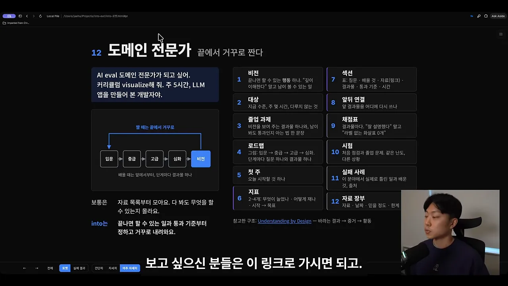
보통은 자료 목록부터 모으는데, 그러면 다 봐도 무엇을 할 수 있는지 몰라요. into는 끝나면 할 수 있는 일과 통과 기준부터 정하고 내려와요. 발표자는 강의를 해 봤을 때 이런 구성이 반응이 좋아서 그대로 포맷에 담았대요.
외울 명령이 없는 가벼운 스킬
into는 포맷만 들어 있는 아주 가벼운 스킬이에요. 설치하거나 복사해 두면 PR, 설계 문서, X 글을 설명해 달라고 할 때마다 맞는 템플릿이 불려 와요. 화면의 표가 쓰는 법을 정리해요. 자료를 가리키고, 말투와 모양과 깊이를 붙이면 돼요.
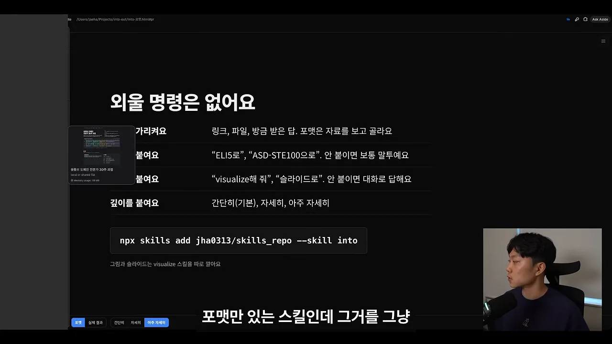
자기에게 맞지 않으면 입맛대로 고쳐 쓰면 되고, 이 스킬 없이 자기에게 맞는 포맷을 그때그때 만들어 둬도 된다고 해요. 핵심은 뼈대를 잘 잡아 두면 정해진 구조만 이해하면 된다는 점이에요.
논문: Attention Is All You Need
논문 포맷으로 Attention Is All You Need를 보여 달라고 했어요. 첫 화면 제목은 "어텐션만으로도 번역은 더 정확해지고 훈련은 빨라졌습니다"예요. 그 아래에 영어 문장 The cat drank its milk와 독일어 Die Katze trank ihre Milch를 잇는 어텐션 선이 그려져 있어요.
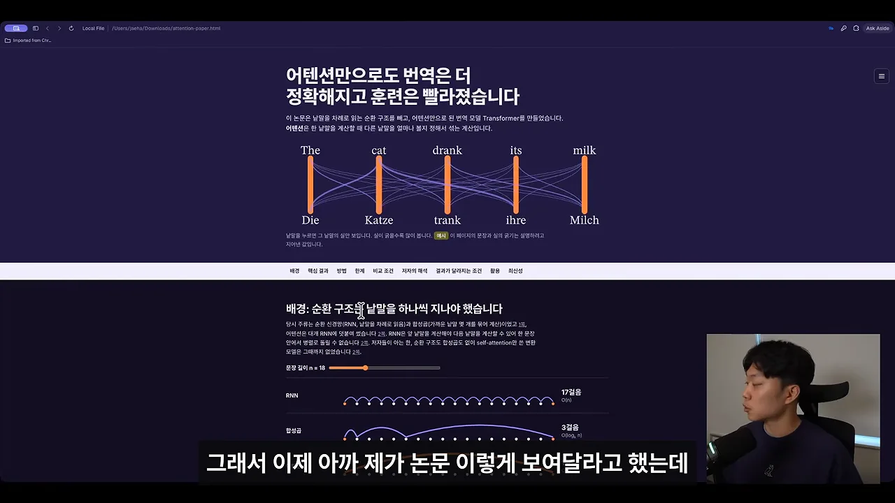
배경, 핵심 결과, 방법이 섹션별로 나뉘고, 단어 위치를 바꿔 가며 어텐션을 직접 실험해 볼 수 있는 칸도 있어요. 더 깊이 들어가고 싶으면 비교 조건 칸에서 키 크기, 헤드 수, 모델 크기 같은 부품 하나를 바꿨을 때 결과가 어떻게 달라지는지 볼 수 있어요.
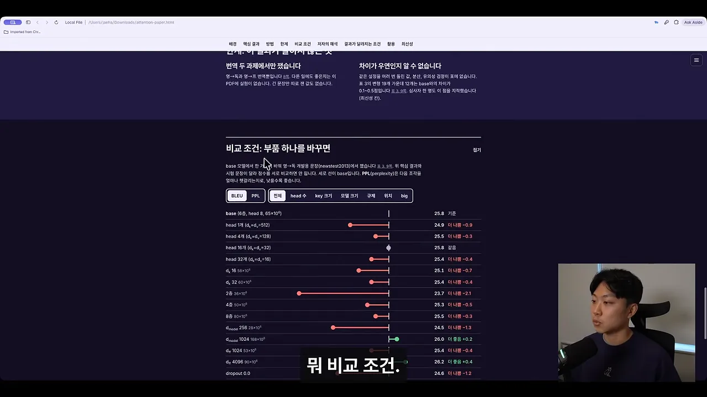
발표자는 논문을 쉽게 리뷰하는 콘텐츠도 고민 중이라며, 이렇게 하면 요즘은 정말 무엇이든 공부할 수 있는 시대라고 말해요.
YouTube 크리에이터 30주 과정
발표자는 YouTube를 잘하고 싶은데, 시작한 지 얼마 안 됐고 제대로 공부해 본 적도 없어서 맨땅에 헤딩하듯 하고 있대요. 그래서 "유튜브 도메인 전문가 30주 과정"을 만들었어요. 오른쪽 위 대상 칸은 영상을 1~5편 올려 본 사람, 주 8시간이에요. 로드맵은 네 단계이고, 단계마다 질문이 하나씩 있어요. 입문은 "누가 왜 이 영상을 누르고 남아 있나", 중급은 "누르고 계속 볼 이유를 일부러 만들 수 있나"예요.
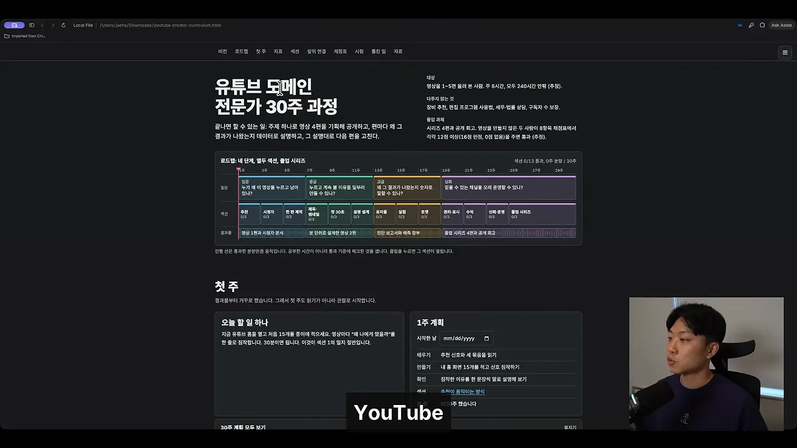
섹션은 추천 알고리즘이 어떻게 움직이는지, 시청자와 주제, 촬영·소리·편집, 제목과 썸네일, 첫 30초와 이야기 구조, 수익 구조까지 이어져요. 결과물마다 통과 기준을 적은 채점표, 시험, 자료 장부까지 붙어 있어요.
YC 투자받는 스타트업 CEO 과정
두 번째는 YC(Y Combinator) 투자를 받는 스타트업 CEO(Chief Executive Officer)가 되기 위한 공부예요. 발표자는 직접 제품을 개발하는 입장이라 CEO의 마인드셋을 갖고 싶었대요. 제목은 "내 회사 숫자로 답하고, 투자 조건을 직접 계산한다"예요. 대상은 아이디어나 초기 제품이 있고 투자를 받아 본 적 없는 사람이고, 졸업 과제는 지원서, 10분 모의 인터뷰 녹화, 지분표 한 묶음이에요.
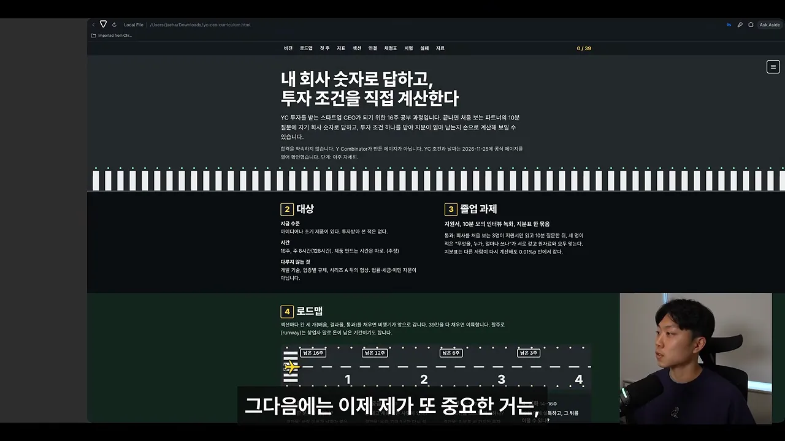
로드맵 단계는 이런 질문으로 이어져요. 입문은 풀 만한 문제를 찾았는지, 중급은 돈 내고 계속 쓰는 사람이 있는지, 고급은 투자 조건을 스스로 계산하는지, 마지막은 10분 만에 설득하고 그 뒤를 이룰 수 있는지예요. 발표자도 이날 처음 만들어서 아직 직접 해 보지는 않았어요. 얼마나 정확하고 실제로 도움이 될지는 모른다고 분명히 말해요.
필요한 지식을 그때그때 익히는 능력
회사 프로젝트에서는 이렇게 커리큘럼까지 짜지는 않아요. 시간이 없으니까요. 대신 필요한 도메인 지식을 그때그때 영상으로, 숏폼으로, 또는 논문처럼 자세한 형식으로 바꿔 받아요.
아무것도 모르는 채로 시작해도 그때그때 내가 필요한 거를 빨리빨리 습득할 수 있는 방법, 습득할 수 있는 능력 그게 AI 시대의 필요한 능력이라고 생각하고
— 영상 22:26
에이전트의 아웃풋을 내가 이해하는 속도가 병목이에요. 이 병목을 넘으려면 다양한 말투와 다양한 포맷으로 더 빨리 이해해야 한다는 게 발표자의 결론이에요.
마지막으로 GitHub의 skills_repo를 열어 into 폴더를 보여 줘요. formats 폴더 안에 codebase, community-post, concept, curriculum, design-doc, general, local-file, paper, pr, skill, social-post, video까지 마크다운 파일 12개가 있어요. 정말 포맷밖에 없는 스킬이에요.
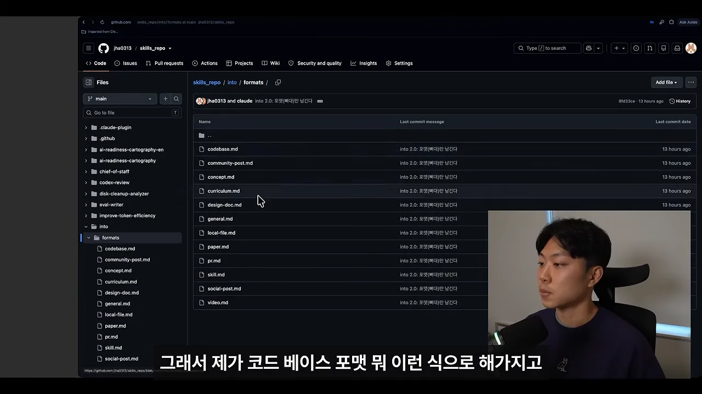
같은 저장소의 Chief of Staff 스킬은 하나의 세션에서 모든 세션을 관리하는 것으로, 발표자는 이걸 오케스트레이터 세션이라고 불러요. 에이전트 아웃풋을 빨리 이해해야 하는 만큼 이 스킬도 중요하다고 보고, 다음 기회에 다룬다고 해요.
AI 시대의 병목 시리즈는 이번 이해 편 다음으로 AI 코드 리뷰, 그리고 에이전트에게 좋은 질문과 인풋을 주는 법으로 이어질 예정이에요. 에이전트에게 인풋을 주는 것도 병목이라는 거예요.